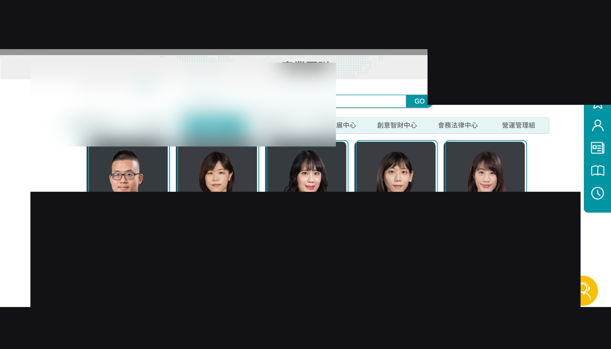
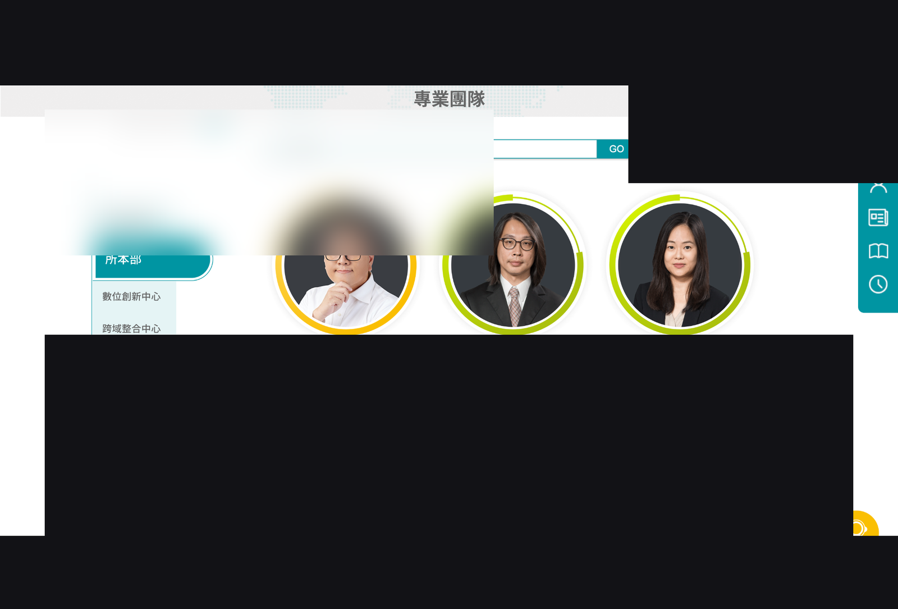
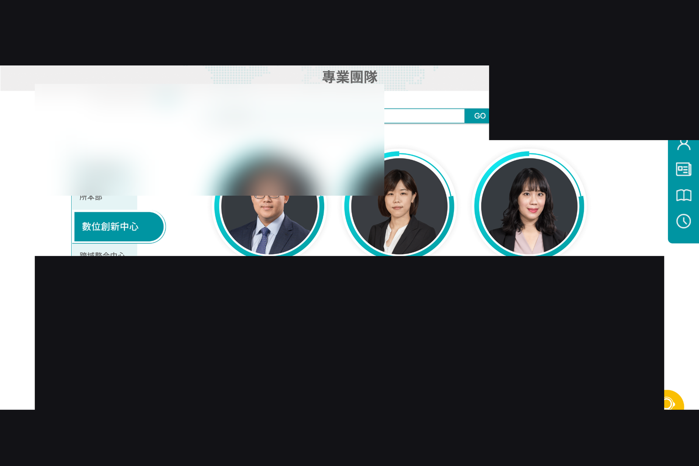

針對研究機構官網提出一系列介面改版：右側快捷功能收合與造型、助手入口擴充、分享列視覺層級（主／輔操作色階）、友善列印強調，以及專業團隊頁兩套 Style（Tab 切換部門、Hover、RWD、英文版兩行 Tab）。
問題
快捷與分享操作層級不清、列印入口不夠顯眼；專業團隊頁資訊密度與部門切換在桌機／手機／英文版的體驗不一致。
解法
重做側欄快捷（收合、圓弧造型）；依「主動導出 vs 輔助」分色階安排分享／複製連結；強化列印 CTA；專業團隊頁提出 Style 1（高資訊密度 Tab）與 Style 2（圓弧、留白、左側部門）並補齊 Hover／RWD／英文版。
成果摘要
完成可對客戶說明的設計決策文案（為何複製連結用低彩度等）
深入說明
快捷與分享列
收合按鈕與圓弧造型提升可發現性；Facebook／LINE／列印／PDF 用高彩度，複製連結用淺灰降低權重。
專業團隊 Style 1
Tab 切換部門減少長滾動；強化姓名／職位色階與照片邊框；提高同屏人數。
專業團隊 Style 2 與多語 RWD
圓弧與留白提升親切感；手機 <990px Tab 自適應；英文版桌機 Tab 兩行以顯示全部部門。
成果
- 完成可對客戶說明的設計決策文案（為何複製連結用低彩度等）
- 兩套團隊頁風格 + 部門切換／RWD／英文版完整示意
- 快捷列與助手入口的互動細節提案
精選畫面



